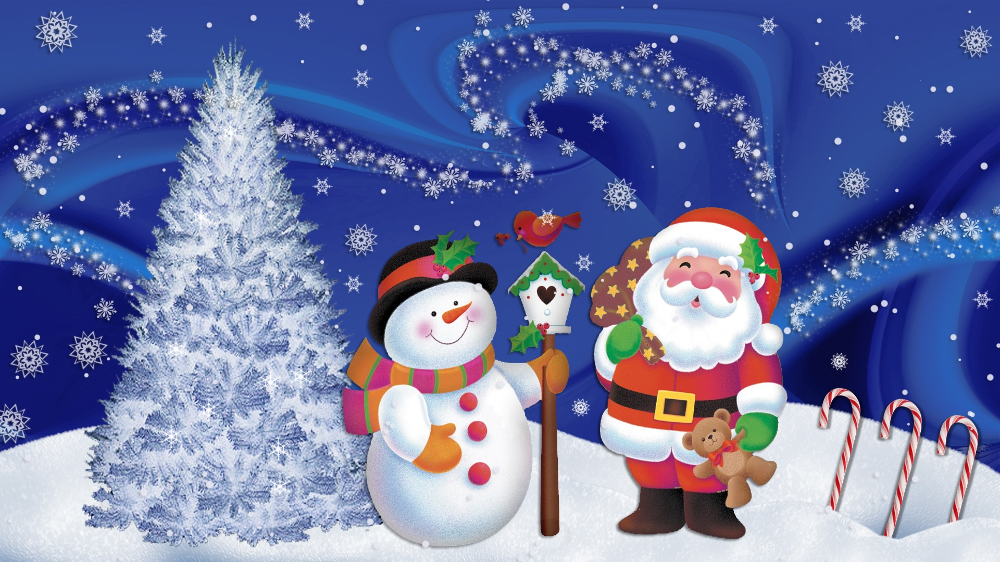
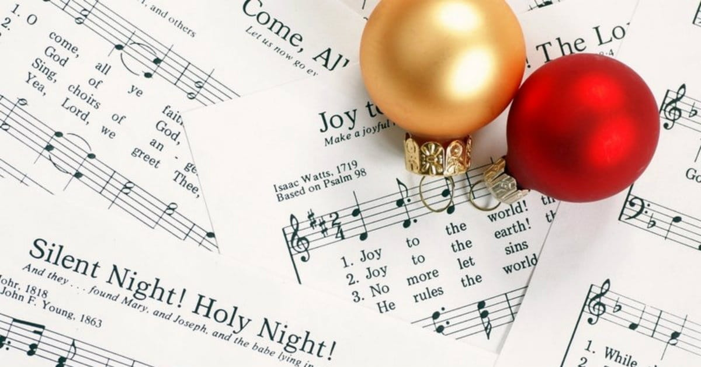
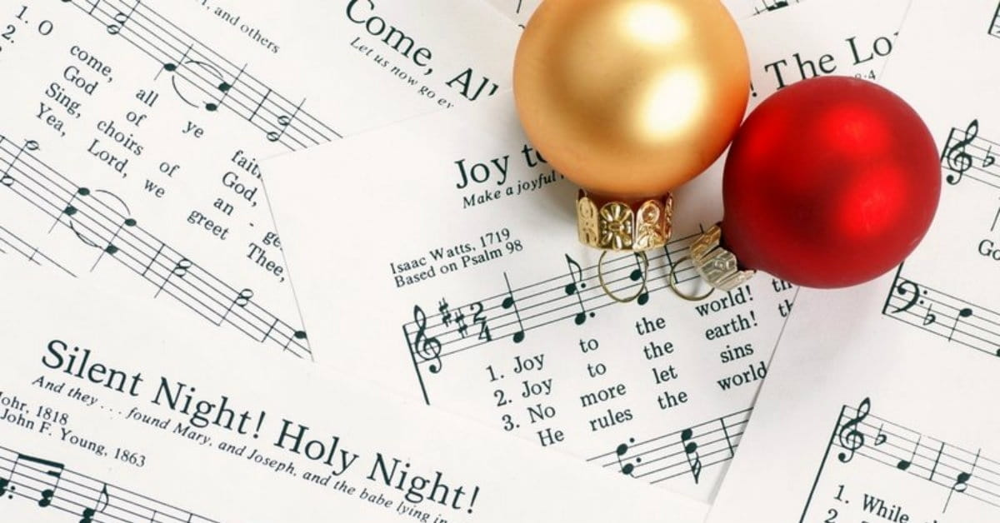

PJESME


Radujte se narodi
Klasična, tradicionalna božićna pjesma koja s lakoćom donosi duh blagdana Više ...
Svim na zemlji
Klasična, tradicionalna božićna pjesma s jakom temom mira i blagostanja Više ...
U to vrijeme godišta
Klasična, tradicionalna božićna pjesma temom veoma slična popularnoj 'Radujte se narodi' Više ...
Narodi nam se
Klasična, tradicionalna i popularna božićna pjesma često na repertoaru mnogih glazbenika Više ...
Veselje ti navješćujem
Tradicionalna božićna pjesma čija tema navješćuje rođenje Krista je još jedan božićni klasik Više ...

Božić dolazi - Srebrna Krila
Popularni božićni klasik dječjeg zbora Srebrna Krila Više ...